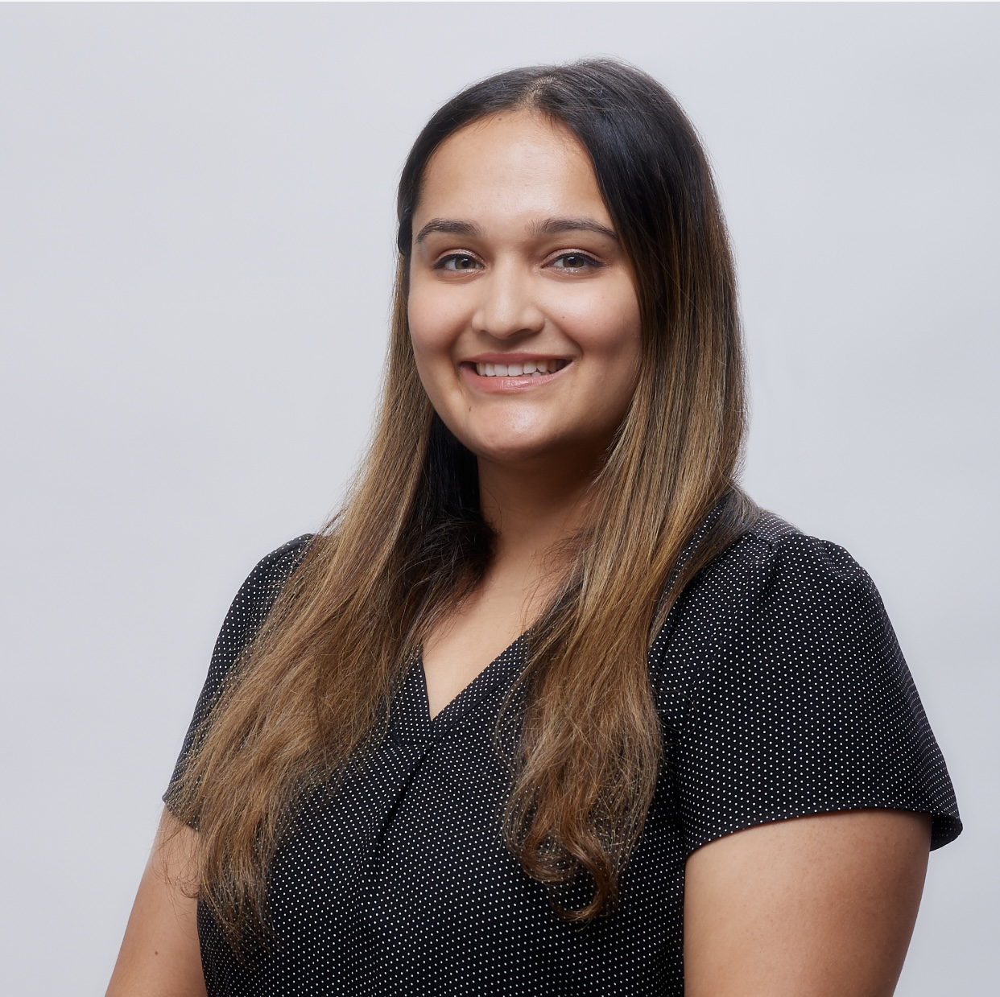

Rachana Kelkar

Click on the photo to know more about me!
Contact: +1(412)-277-3858 Email: rachanakelkar39@gmail.com LinkedIn Profile
Summary
Highly motivated team player aiming to pivot into a project/program management role by leveraging 4 years of professional experience in high growth start-up
Education
- Masters in Pharmaceutical Sciences - University of Pittbsurgh (2017-2019)
- Bachelors in Pharmaceutical Sciences - University of Mumbai (2013-2017)
Work Experience
CAMP4 Therapeutics- Discovery and Translational- Exploratory Sciences- Cambridge, MA
Research Scientist (Oct 2022-June 2023)
Senior Research Associate (Mar 2021-Sept 2022)
Research ASssociate II (Dec 2019-Feb 2021)
Research Intern Co-op (Jul 2019-Dec 2019)
Program/Project Management
- Lead two programs from early in vitro screening to identifying clinical drug candidates
- Project managed cross-functional stakeholders to meet critical deadlines -e.g., screened 30
target genes in 4 months (compared to 6 months before)
- Managed and mentored directly and indirectly members of the exploratory team for different
projects, designing experiments, troubleshooting
- Process improvement- increased throughput 4x by introducing robotic automation
- Negotiated with multiple vendors to procure state of the art services at 20% rates
Technical Projects
- Established and spearheaded new processes for screening drug candidates
- Played a key role in establishing CRISPRa/I technology at the company
- Processed blood samples from patients with specific disease phenotype and in-vivo mouse
samples (liver, kidney, muscle, etc.)
- Familiar with sequencing methods like- ChIP-seq, RNA-seq, DRUG-seq
- Experience in writing bio-reports for IND filing
- Drafted SOPs to increase operational efficiencies and control quality
Skills
- Program/project management:Lead multiple projects with critical deadlines, managed crossfunctional
teams, drafted and reported schedules using Gantt charts, planned activities and developed
and tracked schedules using Smartsheets, vendor relationship management, stakeholder management
- Soft Skills: Effective communication and presentation skills, highly dynamic and collaborative,
directly and indirectly managed drafting and publishing reports, critical thinking, troubleshooting,
problem solving
- Lab skills: HTS-high throughput screens (small molecules, anti-sense oligonucleotides), CRISPRa/i,
siRNA transfections, viral preps & transductions, processing mouse tissues (liver, muscle, kidney,
heart), western blotting, qPCR, ELISA, robotic liquid handling experience, cell culture
- Software experience: Smartsheets, MS Office, GraphPad Prism, Quant, Array & Image Studio, IPA
Curious...What does Rachana do in her free time?
Want to get in touch?